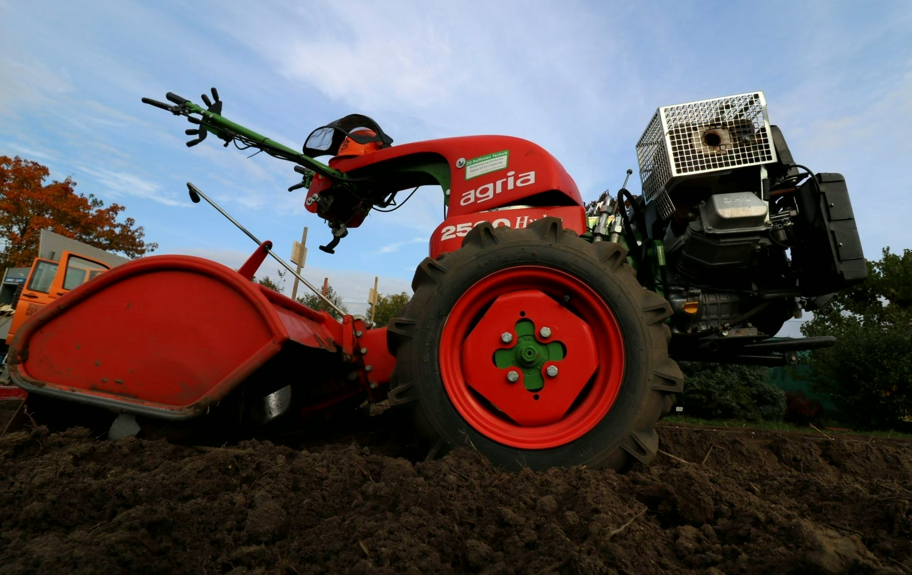
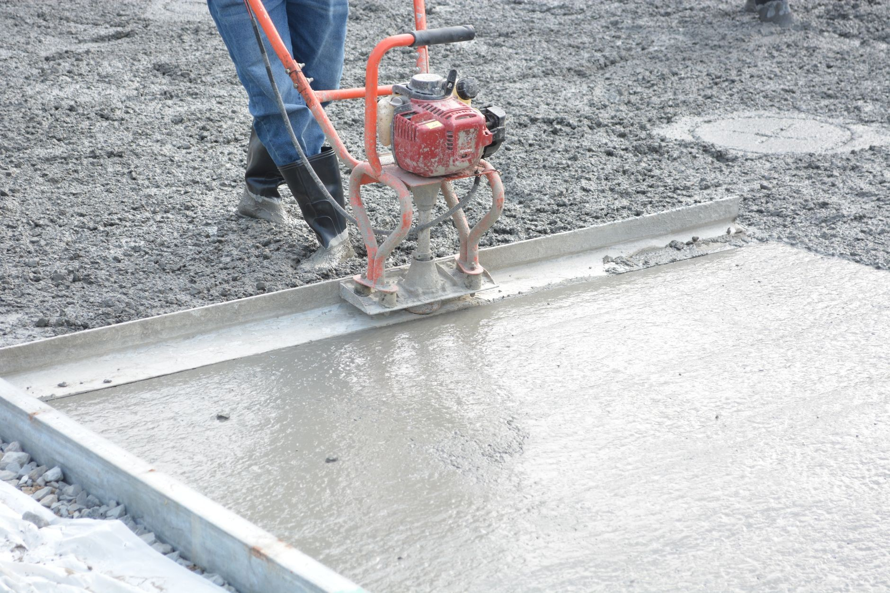
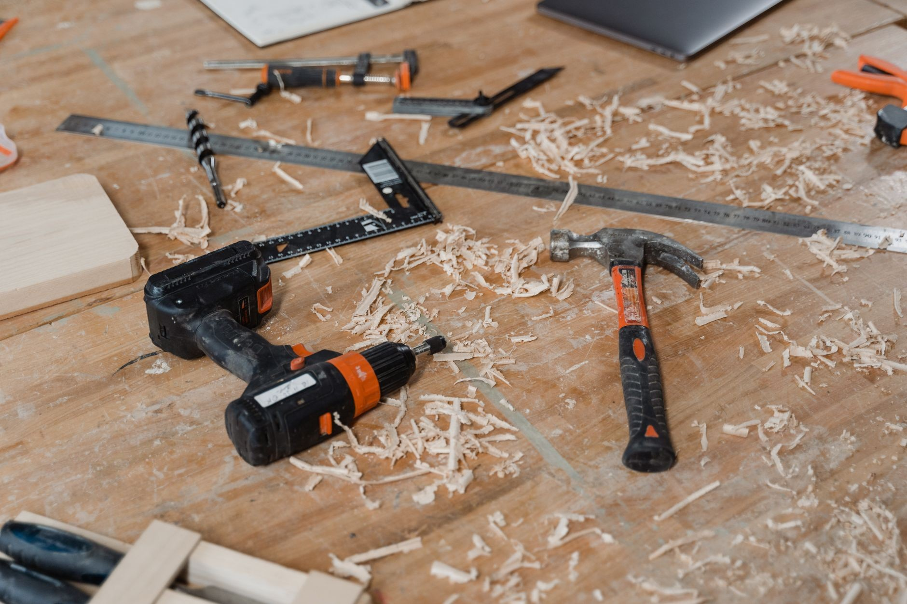

Co u nas wypożyczysz
Sprzęt do ziemi, betonu, rozbiórki, wykończeń i ogrodu. Powiedz, co robisz, a podpowiemy, która maszyna się nada.

Młoty i wiertnice
Młoty do kucia i wyburzeniowe, młotowiertarki, bruzdownica i wiertnica do betonu ze statywem. Do skuwania płytek, rozbiórek i przewiertów.

Zagęszczarki i skoczki
Zagęszczarki gruntu od lekkich, około 64 kg, po ciężkie 500 kg, do tego skoczki do wąskich wykopów. Pod kostkę, podjazd i fundament.

Rusztowania i szalunki
Rusztowania elewacyjne, warszawskie i aluminiowe drabinkowe, stemple budowlane, płyty szalunkowe i zsyp do gruzu.

Ogród i działka
Glebogryzarki, wertykulatory, kosy i kosiarki spalinowe, nożyce do żywopłotu, rębaki do gałęzi i łuparka do drewna.

Beton i wylewki
Betoniarki, łata wibracyjna, wibrator pogrążalny i zacieraczki do betonu. Do wylewek mixokret.

Cięcie
Piły do betonu, asfaltu i klinkieru, przecinarki, maszyny do cięcia płytek i gilotyna do kostki brukowej.

Elektronarzędzia i agregaty
Wiertarko-wkrętarki, szlifierki kątowe, frezarki, opalarki i odkurzacze przemysłowe. Do tego agregaty prądotwórcze, nagrzewnice i osuszacze powietrza.

Zakuwanie węży hydraulicznych
W warsztacie zakuwamy przewody hydrauliczne do maszyn budowlanych i rolniczych oraz regenerujemy siłowniki. Przywieź stary wąż, dobierzemy długość i końcówki.
Którego sprzętu potrzebujesz?
Powiedz, co robisz i na kiedy, a sprawdzimy, czy sprzęt jest wolny.